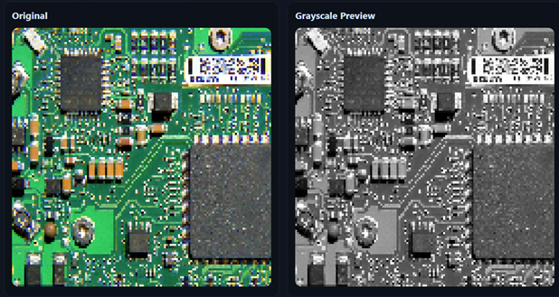
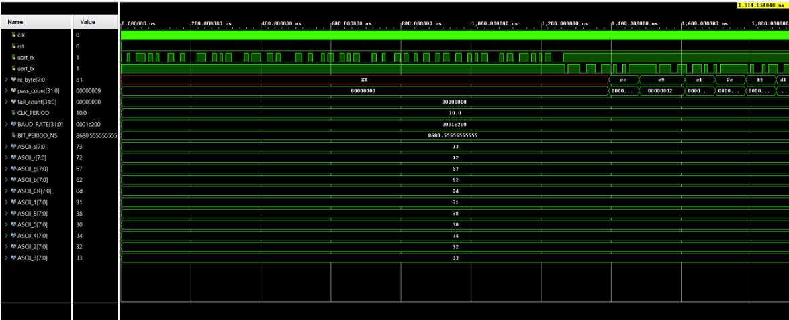
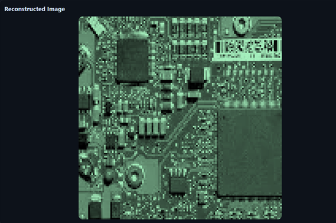

Project Overview
A complete FPGA-based image processing pipeline that reads a 128×128 grayscale image from on-chip Block RAM, applies user-specified RGB color weights received over UART, and streams the colorized pixel data back to a host computer at 115200 baud. The host reconstructs and displays the full-color image using a binary image reconstruction tool.
The design integrates six hardware modules operating at 100 MHz on FPGA fabric, verified through behavioral simulation and confirmed in hardware using an ILA.
Project Visuals
Grayscale input exported from the host tool, the simulated UART waveform captured in Vivado, and the final reconstructed color image output.

Grayscale Input · Host Export Tool

Simulated Waveform · Vivado

Reconstructed Color Output
Hardware Modules
Module 01
Baud Rate Generator
NCO accumulator producing 16× oversampling ticks for 115200 baud UART at 100 MHz system clock.
Module 02
UART Receiver
2-FF metastability synchronizer. Samples with 16× oversampling. Outputs validated byte + one-cycle strobe on new data.
Module 03
UART Transmitter
Serializes bytes as 8N1 frames. Asserts o_busy during transmission for backpressure flow control.
Module 04
Image BRAM
128×128 grayscale image in Block RAM. 1-cycle synchronous read latency explicitly handled in TX FSM with TXS_WAIT_DATA state.
Module 05
RGB Calculator
Combinational. Computes R/G/B = min(I × W / 16, 255) using 13-bit multiplication, 4-bit right shift, and saturation logic.
Module 06
Colorizer Core
Dual-FSM central controller. Command FSM + TX FSM in a single clocked process to eliminate multiple-driver risk on shared signals.
Dual-FSM Architecture
The colorizer core contains two FSMs implemented in a single always_ff block to safely share internal state. The tx_start flag is set by the Command FSM and consumed by the TX FSM without race conditions.
Command FSM — 12 States
CMD_R_D1 → CMD_R_D2 → CMD_R_CR
CMD_G_D1 → CMD_G_D2 → CMD_G_CR
CMD_B_D1 → CMD_B_D2 → CMD_B_CR
CMD_RUNNING
TX FSM — 10 States
TXS_WAIT_DATA → TXS_SEND_R
TXS_WAIT_R → TXS_SEND_G
TXS_WAIT_G → TXS_SEND_B
TXS_WAIT_B → TXS_NEXT
UART Command Interface
The user sets RGB weights and triggers transmission via ASCII commands over UART. The command FSM parses incoming bytes, collects weight digits, converts ASCII to binary, clamps values to [0, 31], and stores in weight registers.
Example: r18<CR>g04<CR>b23<CR>s<CR> sets WR=18, WG=4, WB=23 and starts the transmission. Simulation verified R=182, G=40, B=232 for the reference pixel I=162 — matching the lab specification exactly.
Verification & Hardware Testing
A comprehensive SystemVerilog testbench sent the full command sequence over simulated UART, verified correct RGB byte ordering and values for multiple pixels, and confirmed pass_count incremented with fail_count at zero throughout all test assertions.
The ILA was connected to FSM states, RGB weight registers, UART strobe/busy signals, and BRAM address/data — enabling real-time hardware observation. The colorized output was reconstructed from the captured binary file and visually verified across multiple weight configurations.